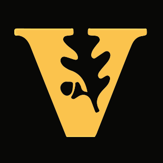

<div class="container">
	<div class="row banner">
		<h1 class="font-1 text-center">About Me</h1>
		<div class="row">
			<div class="col-xs-12 col-sm-3 col-md-3 col-lg-3 text-center">
				<a href="https://generalassemb.ly/" target="_blank" class="about-link">
					
					<h3 class="font-1">General Assembly</h3>
				</a>
				<h4 class="font-2"><i class="fa fa-globe"></i> Seattle, WA</h4>
				<h4 class="font-2">2015</h4>
				<p class="font-1">I learned to build full-stack web applications at General Assembly in their 12-week, immersive web development course. Topics covered included Javascript, HTML5, CSS3, Node.js, Express.js, Angular.js, MongoDB (MEAN stack), Ruby on Rails, SQL, PostgreSQL, jQuery, Git/GitHub, and more. The course was intensive, with a full day of lectures and labs Monday through Friday with homework every night. I completed a number of projects, which can be viewed in my portfolio. Overall, I learned an incredible amount in a short time. </p>
			</div>
			<div class="col-xs-12 col-sm-3 col-md-3 col-lg-3 text-center">
				<a href="http://vmghealth.com/" target="_blank" class="about-link">
					
					<h3 class="font-1">VMG Health</h3>
				</a>
				<h4 class="font-2"><i class="fa fa-globe"></i> Nashville, TN</h4>
				<h4 class="font-2">2013-2015</h4>
				<p class="font-1">I was an analyst for the valuation and appraisal of healthcare contracts at VMG Health. I was responsible for financial modeling, report writing, data gathering, and due diligence. I was lucky to work with a small, motivated team. As a result, I was given a lot of responsibility from the very start, where I learned to develop creative solutions, manage multiple time-sensitive engagements, interface with clients, and ensure compliance with regulatory guidelines. Lastly, my experience also taught me a lot about the healthcare industry.</p>

			</div>
			<div class="col-xs-12 col-sm-3 col-md-3 col-lg-3 text-center">
				<a href="http://www.vanderbilt.edu/" target="_blank" class="about-link">
					
					<h3 class="font-1">Vanderbilt University</h3>
				</a>
				<h4 class="font-2"><i class="fa fa-globe"></i> Nashville, TN</h4>
				<h4 class="font-2">2009-2013</h4>
				<p class="font-1">I attended Vanderbilt University, where I earned a bachelor's degree in Mathematics and Economics. I was interested in using quantitative methods to understand the world. In particular, I learned how to apply economic and mathematical theory to things like policy, healthcare, and history.  In addition, I studied Italian and was able to study abroad for a semester in Florence, Italy. In my spare time, I was an instructor for Vanderbilt's outdoor expedition club, Wilderness Skills. I also pursued my interest in music by DJing for WRVU and playing in Vanderbilt's community band. </p>
			</div>
			<div class="col-xs-12 col-sm-3 col-md-3 col-lg-3 text-center">
				<a href="http://www.campagawam.org/" target="_blank" class="about-link">
					
					<h3 class="font-1">Camp Agawam</h3>
				</a>
				<h4 class="font-2"><i class="fa fa-globe"></i> Raymond, ME</h4>
				<h4 class="font-2">2007-2015</h4>
				<p class="font-1">I worked at Camp Agawam, a summer camp for boys aged 8 to 15, for eight summers  in a variety of different roles.</p>
				<p class="font-1">As director of trips, I managed all aspects of about 30 overnight expeditions at camp, including staffing and training, gear and food, safety, communication, and general preparation and planning. It was a ton of work, but incredibly rewarding. I was first exposed to outdoor trips at this camp, so I really valued the opportunity to create the same experience I had for a new generation of children.</p>
				<p class="font-1">As head of outdoor education, I managed staff and campers in the instruction of outdoor living skills. I was responsible for quality of instruction, safety, and making the program fun! I am proud to say that under my direction, the program increased camper achievement, never had a safety accident, and was voted most popular activity in camp.</p>
			</div>
		</div>
	</div>
</div>
